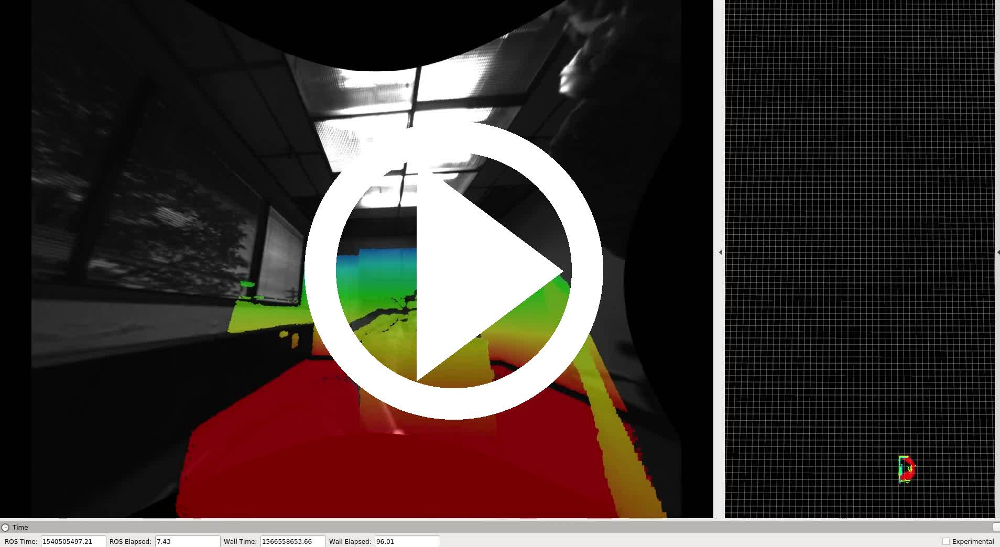
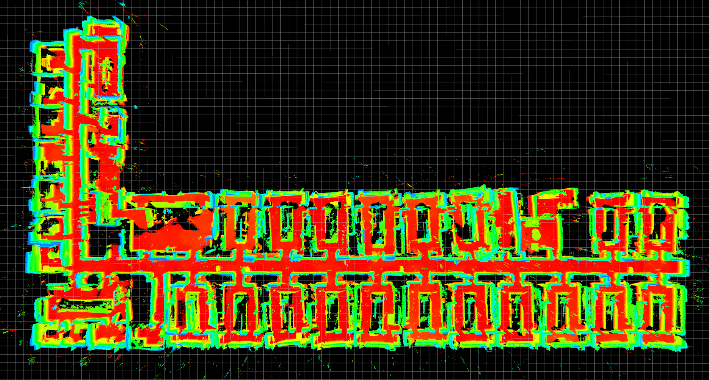
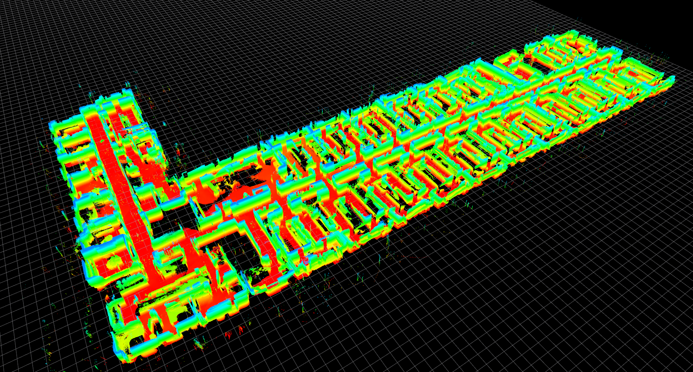
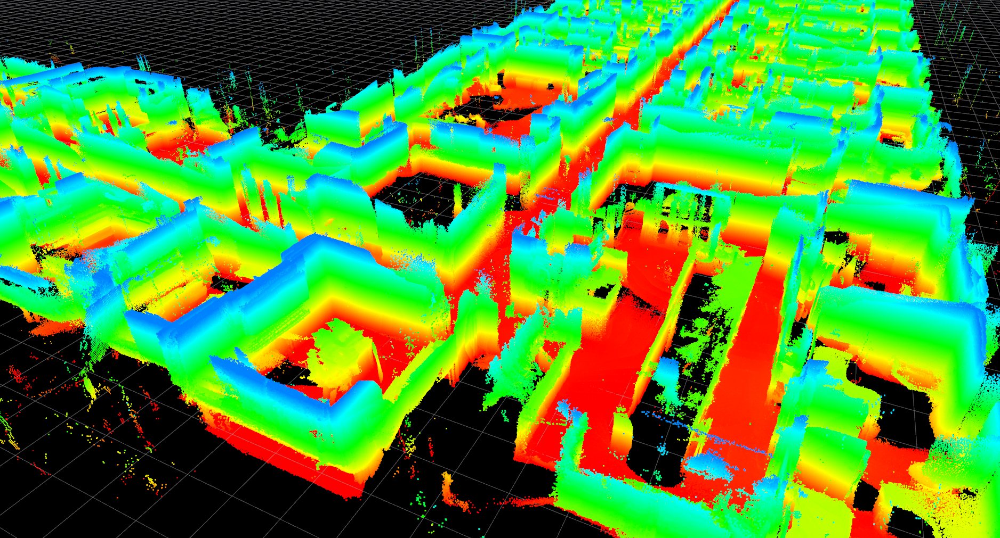

2018-10-25
2018-10-25-18-11-30
| Exploration of 4th floor of building 227, with AprilTags present. Similar to sequence 2018-11-08-13-10-31, but with worse lighting. Explores bathrooms. | ||
|  | ||
|  |  |  |
| sensor rig: [Falcon 250, configuration 3](../../../../sensors#falcon_250_rig) | location: [Building 227](../../../../locations/building_227) | |
| duration: 824s | ||
| approx path length: 685m | altitude difference: 2.33m | |
| median/maximum velocity: 0.87 / 1.40 m/s | median/maximum angular velocity: 0.40 / 2.15 rad/s | |
| environment: indoors | lighting: artificial | tags: yes |
| rosbag with raw data (52Gb) | tar file with calibration and launch files | rosbag with odometry (135Mb) |
| rosbag with tagslam odometry (141Mb) | rosbag with tag detections (3.2Mb) |